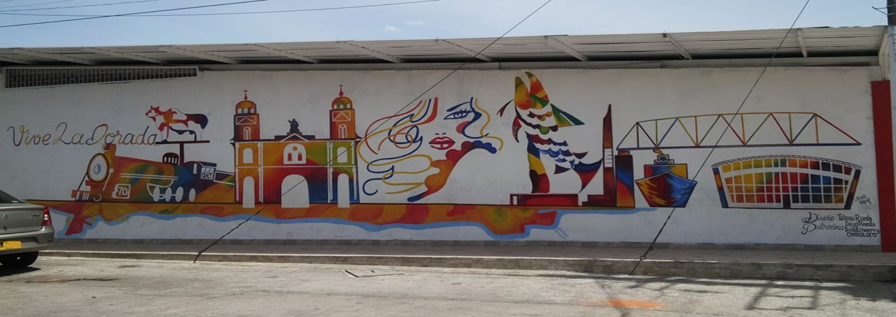
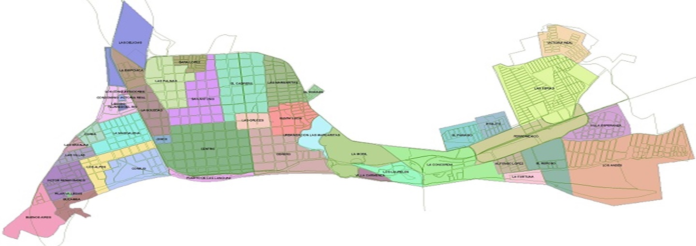

- 
- 


Somos un colectivo progresista caldense comprometido con la construcción de un Caldas más justo, equitativo y sostenible. Nacimos de la profunda convicción de que el progreso de nuestra región debe ir de la mano con la justicia social, la equidad de género, la sostenibilidad ambiental, la mano trabajadora y víctimas del conflcito armado.
Nuestra Misión
Buscamos impulsar un desarrollo integral para Caldas, donde cada ciudadano tenga acceso a oportunidades dignas y donde la riqueza de nuestra tierra se gestione de forma responsable. Creemos en un futuro donde la educación pública de calidad, la salud accesible para todos, la generación de empleo justo y la protección de nuestros recursos naturales sean pilares inquebrantables.
Nuestros Principios
Nos regimos por valores como la solidaridad, la participación ciudadana, la transparencia y el respeto a la diversidad. Estamos convencidos de que el cambio verdadero se construye desde las bases, escuchando las voces de las comunidades y trabajando de manera colaborativa para transformar la realidad.
Nuestro Compromiso
Desde una perspectiva progresista, nos dedicamos a:
Promover políticas públicas que reduzan la desigualdad y fortalezcan el bienestar social.
Impulsar iniciativas que fomenten una economía local sostenible y generadora de valor.
Defender el medio ambiente y trabajar por la conservación de nuestros ecosistemas.
Fortalecer la participación ciudadana como herramienta fundamental para la democracia.
Visibilizar y apoyar las causas de los grupos más vulnerables de nuestra sociedad.
Somos un espacio abierto a todos aquellos caldenses que sueñan y trabajan por un departamento donde el progreso sea para todos y todas.
Nuestra Visión
Visualizamos un Caldas donde el progreso sea sinónimo de bienestar colectivo y oportunidades para todos. Un Caldas que se distinga por:
Ser líder en desarrollo social sostenible: Un territorio donde la prosperidad económica no comprometa el futuro de nuestras generaciones ni el equilibrio de nuestros ecosistemas.
Ofrecer educación y salud pública de excelencia: Garantizando el acceso universal y de calidad, para que el talento caldense florezca y cada ciudadano tenga una vida plena.
Fomentar una economía innovadora y equitativa: Que impulse la creación de empleo digno, el fortalecimiento de los pequeños productores y el desarrollo de nuevas industrias, siempre con respeto por el medio ambiente.
Fortalecer la participación ciudadana y la transparencia: Promoviendo un gobierno abierto y una sociedad civil activa, donde las decisiones se tomen con la voz de la gente y la rendición de cuentas sea una constante.
Ser un referente en la protección ambiental y la gestión de recursos naturales: Convirtiendo nuestra riqueza natural en un motor de desarrollo sostenible y un legado para el futuro.
La región del Magdalena Medio, y en particular el departamento de Caldas, tiene una rica herencia cultural que se remonta a sus ancestros indígenas. Esta área ha sido habitada por diversas comunidades a lo largo de la historia, y su legado se refleja en las prácticas culturales, la organización social y las tradiciones que perduran hasta hoy.
Grupos Indígenas
Antes de la llegada de los europeos, la región estaba habitada por diversas comunidades indígenas. Entre ellos, los quimbayas son uno de los grupos más reconocidos, famosos por su habilidad en la orfebrería y su conocimiento de la agricultura. Sus prácticas culturales y su legado son un componente importante de la identidad regional.
Colonialismo
Con la llegada de los colonizadores españoles en el siglo XVI, la demografía y cultura de la región cambiaron significativamente. Los españoles establecieron haciendas y explotaron recursos naturales, lo que afectó a las comunidades indígenas locales, muchas de las cuales fueron desplazadas o forzadas a adoptar costumbres europeas.
Influencias Africanas
A partir del siglo XVI, la llegada de esclavos africanos también marcó la historia de Caldas y otros departamentos del Magdalena Medio. La población africana aportó significativamente a la cultura, música, gastronomía y tradiciones de la región.
Desarrollo Cultural y Social
A lo largo de los siglos, la región del Magdalena Medio, incluyendo Caldas, ha sido un punto de encuentro de diversas culturas. La mezcla de influencias indígenas, africanas y europeas ha dado lugar a una identidad cultural única. Las comunidades han desarrollado una rica tradición en la música, la gastronomía y las artesanías, que son un reflejo de su historia y diversidad.
Herencia Cultural
Hoy en día, la herencia de estos ancestrales es evidente en las prácticas culturales de la región, incluyendo festividades, música, danzas y tradiciones culinarias. Esto se refleja en comunidades que celebran la combinación de influencias indígenas, africanas y europeas.